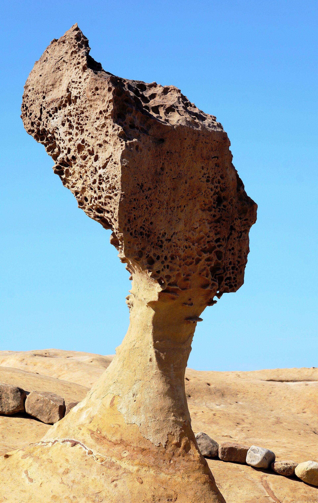

女王頭的脖子，為什麼不能只用一把尺預告結局？
量到風化、推估斷裂、決定是否補強，是三個不同問題。保存一座地景，也要知道哪些變化還不能被可靠預測。
看女王頭的照片，很容易把注意力停在那道細頸：還能撐多久？新聞隔幾年就帶來一個新數字，有時說頸圍縮小，有時又給出倒數年限。可是，若把這些數字直接連成折線，再往下延伸成斷頸日期，可能把不同量測條件、不同年代的轉述，以及不同的「風化速率」混成一件事。女王頭確實在改變，卻不表示每個看似精確的小數點，都能回答它何時失去支撐。

一、塑造輪廓的過程，也在改變支撐
北科大的野柳實地文章說明，蕈狀岩上部含鈣、較堅硬的砂岩，比下部更能抵抗風化，逐漸形成頭大、頸細的外形。這不是先有完整雕像，再被海風吹壞；差異風化本來就是它成為今日形狀的原因。
但「同一過程形成美景」不表示未來改變沒有風險。頸部繼續流失，與上部岩塊及整體結構之間的關係會改變。風、雨、鹽分環境、颱風或地震等作用也不是均勻的年度削皮，不能假設每年固定從同一圈磨掉相同厚度。
2026 年 TVBS 報導引述北觀處指出，侵蝕不限於頸部，也涉及頭頂與整體岩體[3]。因此，即使只關心支撐，頸圍仍只是較容易溝通的一個外形指標，不能當成全部結構的狀態。
二、一個頸圍數字，需要附上量測位置與日期
北觀處的公開說明記載，自 2008 年起委託每年進行三維掃描，並用於監測及原尺寸複製[4]。三維紀錄的價值，是能保存形狀供日後比較，不只留下最細處的一個數。
2023 年《Taipei Times》報導引述園方資料，列出 2005 年 138.27 公分、2015 年 127.88 公分、2017 年 125.01 公分，以及當年九月 118.3 公分。2026 年 TVBS 則把 116.59 公分標為 2024 年十月量測，並另列一套歷史序列。這些數字分別由媒體轉述機關；要重新計算長期變化，仍須取得可比較的原始掃描資料。
若想把數值接成長期曲線，至少需要確認每年量的是哪個截面、採用何種輪廓算法、精度及資料處理是否一致。目前公開報導沒有把這些條件全部交代。報出小數點後兩位，只表示數字呈現的形式，不能自行補成量測不確定度只有百分之一公分。
三、資料對不起來，就先不要替它們編理由
歷史序列不只細節不同。2015 年《Taipei Times》報導寫，2006 年頸圍 144 公分；2026 年 TVBS 的表述，2006 年則是 136 公分[7][3]。若沒有原始資料與方法，不能挑一個喜歡的數字，也不能猜成一個量直徑、一個量周長。
2026 年同一篇報導還同時引述一年約 1 至 2 公分的變化，以及另一位學者平均每年約 0.2 公分的風化。後者究竟對應哪個位置、哪種幾何量或哪段時期，報導沒有足夠資訊可供換算。這些不能平均成「約一公分」，也不能硬說是內外徑或表面厚度差別。
這些紀錄讓我們看見女王頭持續風化，也留下需要核對的量測差異。從「知道它在變」走到可驗證的等速倒數模型，中間仍缺少一致的資料與方法。
四、有裂紋，不等於知道何時斷
北觀處一份未標示明確發布日期的回應，曾澄清新聞所說裂痕屬岩體原有節理，並稱當時連續觀察未見特別異常[4]。這份當時的觀察提醒我們，可見線條可能有原有的地質背景；要判斷今天的結構狀態，仍需要有日期的監測紀錄。
同樣地，2015 年報導曾轉述五至十年內可能斷裂的估計。估計的條件、模型及不確定範圍沒有在該篇完整展示，不能把它寫成確定預言，更不能因為期限過去就自行編造「哪種保護措施讓它延壽」的因果。
外形監測、內部結構判讀與失效時間預測，是相關卻不同的工作。持續量測能辨認變化；要預測何時斷，還要知道剩餘岩體強度、裂隙及未來受力。上述公開材料沒有提供足以核對的完整失效模型，不能據此給出倒數年限。
五、實驗室變硬，還要通過海邊這一關
保存並非完全沒有研究。2015 年報導記錄，研究團隊先在相似蕈狀岩試驗：實驗室材料強化有結果，戶外塗層卻出現剝落、孔洞與白化。管理單位當時要求，原貌、色澤與自然觀感不可被改壞，才考慮對本尊施作。這份紀錄中的戶外試驗，仍是本尊施作決策之前的一道關卡。
北科大 2023 年實地文章介紹另一方向，以液體讓材料滲入砂岩內部，而非只留在表面，並在施作前用雷射掃描記錄形狀。2026 年報導仍把周邊相似岩石試驗及評估，和本尊的保存決策分開。不同世代、不同材料與不同階段，不能全部叫成同一個已完成的奈米補強工程。
一種方法值得進一步試驗，至少要問強度能維持多久、是否改變顏色與透水性、戶外乾濕循環後如何，以及發現副作用時能否處理。評估需要回答這些問題，並把觀察時間拉長：外觀當下沒有改變，仍不足以說明長期影響。
六、要保存的，是岩石、形象，還是自然變化？
女王頭讓問題變得尖銳：若用支架撐住、塗一層外殼，輪廓可能留下，卻也可能改變人們想看的天然地景。若完全不介入，則要接受形狀可能在某一天改變。工程數字無法替大家決定，這些目標應該如何排序。
三維掃描、原尺寸複製、限制接觸與持續監測，處理的也是不同目標。複製品保存形象與教學資料，不會停止本體風化；限制接觸可減少一類人為作用，不會讓自然風化歸零。把每項措施實際能做的事說清楚，才知道每一步離「救回女王頭」還有多遠。
所以，眼前最負責的說法不是「快斷了」或「保證沒事」，而是公開可比較的監測資料、補強試驗結果與介入條件。科學可以讓選擇看得更清楚；要保留哪一部分、願意接受什麼改變，仍是地景保育必須面對的公共決定。
查證資料來源7 項
保留本輪全文的完整來源與支持範圍；未刊審閱稿，尚未安排刊期。
- 成果資源：岩石掃描監測與補強計畫（野柳地質公園官網） ↗
- 野柳女王頭頸圍116.59公分 斷頭危機再現？（自由時報，2025-07-18） ↗
- 野柳女王頭頸圍31年縮水逾百公分 學界試驗補強技術盼延緩風化（TVBS，2026-10-19） ↗
- 回應野柳地質公園女王頭斷頸疑慮（北觀處） ↗
- 實地運用砂岩強化技術 保存野柳珍稀美景（北科青年2023年9月號） ↗
- Rock collapse spikes Queen’s Head concerns（Taipei Times，2023-12-18） ↗
- Quest for fix to Queen’s Head structure continues（Taipei Times，2015-05-26） ↗
延伸探討
把故事帶回自己的思考
有沒有一件你很想留下、卻也知道它正在改變的東西？如果保存它會改變原本的模樣，你最不願失去哪一部分？面對家中的老物件、熟悉的街景或自然地景，你的答案會一樣嗎？